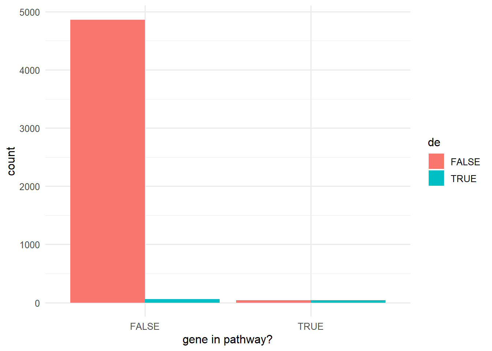
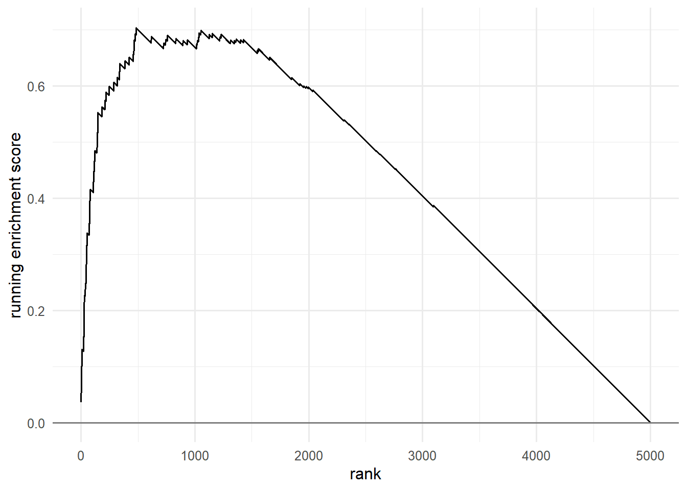

library(tidyverse)
set.seed(42)
theme_set(theme_minimal(base_size = 12))Week 4, Session 2 — Enrichment analysis (GSEA / ORA)
Course 4 — #courses
Note
Workflow labs use the variant template: Goal → Approach → Execution → Check → Report.
Learning objectives
- Perform an over-representation analysis (ORA) by the hypergeometric test on a simulated example.
- Describe the GSEA running-sum statistic and when it is preferred over ORA.
- Recognise the hazards of gene-set overlap and of using different background universes.
Prerequisites
Multiple testing from Course 1; RNA-seq DE results from Session 1.
Background
Pathway or gene-set enrichment analyses take a list of candidate genes — from a differential-expression analysis, say — and ask whether any annotated set contains more of them than expected by chance. Over- representation analysis (ORA) is the simplest version: given a universe of N genes, k of which are in a pathway, and a shortlist of n genes of which m are in that pathway, the hypergeometric distribution returns a p-value for the overlap.
Gene-set enrichment analysis (GSEA) uses the full ranked list of genes and tests whether members of a pathway are concentrated at the top or bottom of the ranking via a running-sum statistic. Unlike ORA, it does not require a threshold, and it retains information from genes that fall just short of significance.
Both methods are sensitive to the background universe. If the universe is “all human genes” but the measurement technology only detects half of them, the p-values are wrong. The correct universe is the set of genes actually tested in the upstream analysis.
Setup
1. Goal
Demonstrate a hypergeometric ORA by hand, then sketch the fgsea call pattern for a running-sum GSEA.
2. Approach
Simulate a universe of 5 000 genes; a pathway of 80 members is enriched for differentially expressed (DE) genes.
N <- 5000
pathway <- sample(seq_len(N), 80)
true_de <- unique(c(sample(pathway, 40), sample(setdiff(seq_len(N), pathway), 60)))
tibble(in_pathway = seq_len(N) %in% pathway,
de = seq_len(N) %in% true_de) |>
count(in_pathway, de) |>
ggplot(aes(in_pathway, n, fill = de)) +
geom_col(position = "dodge") +
labs(x = "gene in pathway?", y = "count")
3. Execution
Hypergeometric test by hand.
n_de <- length(true_de)
k_in <- sum(true_de %in% pathway)
p_hyper <- phyper(k_in - 1, 80, N - 80, n_de, lower.tail = FALSE)
c(overlap = k_in, expected = n_de * 80 / N, p = p_hyper) overlap expected p
4.000000e+01 1.600000e+00 9.624719e-50 Make a ranked gene list (as if from DE) and sketch fgsea.
stat <- rnorm(N)
stat[pathway] <- stat[pathway] + 1.2 # shift pathway genes up
names(stat) <- paste0("g", seq_len(N))
stat <- sort(stat, decreasing = TRUE)
# Running-sum demonstration by hand.
in_set <- names(stat) %in% paste0("g", pathway)
p_hit <- abs(stat) / sum(abs(stat[in_set]))
p_miss <- 1 / sum(!in_set)
run_sum <- cumsum(ifelse(in_set, p_hit, -p_miss))
ES <- run_sum[which.max(abs(run_sum))]
tibble(i = seq_along(run_sum), rs = run_sum) |>
ggplot(aes(i, rs)) + geom_line() +
geom_hline(yintercept = 0, colour = "grey50") +
labs(x = "rank", y = "running enrichment score")
fgsea sketch.
library(fgsea)
gene_sets <- list(pathway = paste0("g", pathway))
fgsea_res <- fgsea(pathways = gene_sets, stats = stat,
minSize = 15, maxSize = 500)4. Check
Compare the ORA result for different shortlist sizes.
sweep_ora <- sapply(c(50, 100, 200, 500), function(top) {
short <- names(stat)[seq_len(top)]
k <- sum(short %in% paste0("g", pathway))
phyper(k - 1, 80, N - 80, top, lower.tail = FALSE)
})
tibble(top = c(50, 100, 200, 500), p = sweep_ora)# A tibble: 4 × 2
top p
<dbl> <dbl>
1 50 8.98e-12
2 100 1.19e-13
3 200 1.05e-17
4 500 5.64e-205. Report
In a simulated universe of 5 000 genes with a pathway of 80 members enriched for DE, the hypergeometric ORA for the full DE shortlist gave p = 9.6^{-50}. A running-sum GSEA on the full ranked list produced an enrichment score of 0.7 with the running sum peaking near the top.
ORA is a quick, interpretable first pass; GSEA is better when the effect is diffuse. The two answer different questions and sometimes disagree; both are worth showing when the result matters.
Emphasise the universe choice: gene-sets from MSigDB contain human gene symbols, but your measured genes may be a biased subset.
Common pitfalls
- Using the full genome as the ORA universe when only a subset was assayed.
- Double-counting overlapping pathways as independent discoveries.
- Reporting a GSEA p-value without the normalised enrichment score.
Further reading
- Subramanian A et al. (2005), Gene set enrichment analysis: A knowledge-based approach for interpreting genome-wide expression profiles.
- Huang DW, Sherman BT, Lempicki RA (2009), Bioinformatics enrichment tools: paths toward the comprehensive functional analysis of large gene lists.
Session info
sessionInfo()R version 4.5.2 (2025-10-31 ucrt)
Platform: x86_64-w64-mingw32/x64
Running under: Windows 11 x64 (build 26200)
Matrix products: default
LAPACK version 3.12.1
locale:
[1] LC_COLLATE=English_Germany.utf8 LC_CTYPE=English_Germany.utf8
[3] LC_MONETARY=English_Germany.utf8 LC_NUMERIC=C
[5] LC_TIME=English_Germany.utf8
time zone: Europe/Berlin
tzcode source: internal
attached base packages:
[1] stats graphics grDevices utils datasets methods base
other attached packages:
[1] lubridate_1.9.5 forcats_1.0.1 stringr_1.6.0 dplyr_1.2.1
[5] purrr_1.2.2 readr_2.2.0 tidyr_1.3.2 tibble_3.3.1
[9] ggplot2_4.0.3 tidyverse_2.0.0
loaded via a namespace (and not attached):
[1] gtable_0.3.6 jsonlite_2.0.0 compiler_4.5.2 tidyselect_1.2.1
[5] scales_1.4.0 yaml_2.3.12 fastmap_1.2.0 R6_2.6.1
[9] labeling_0.4.3 generics_0.1.4 knitr_1.51 htmlwidgets_1.6.4
[13] pillar_1.11.1 RColorBrewer_1.1-3 tzdb_0.5.0 rlang_1.2.0
[17] stringi_1.8.7 xfun_0.57 S7_0.2.2 otel_0.2.0
[21] timechange_0.4.0 cli_3.6.6 withr_3.0.2 magrittr_2.0.4
[25] digest_0.6.39 grid_4.5.2 hms_1.1.4 lifecycle_1.0.5
[29] vctrs_0.7.3 evaluate_1.0.5 glue_1.8.1 farver_2.1.2
[33] rmarkdown_2.31 tools_4.5.2 pkgconfig_2.0.3 htmltools_0.5.9